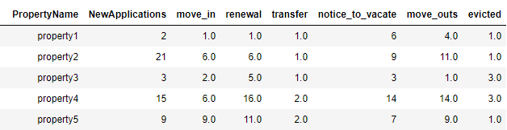
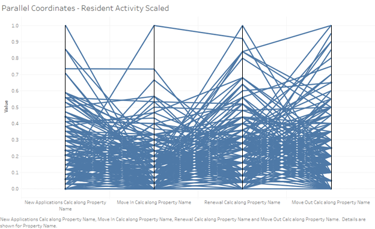
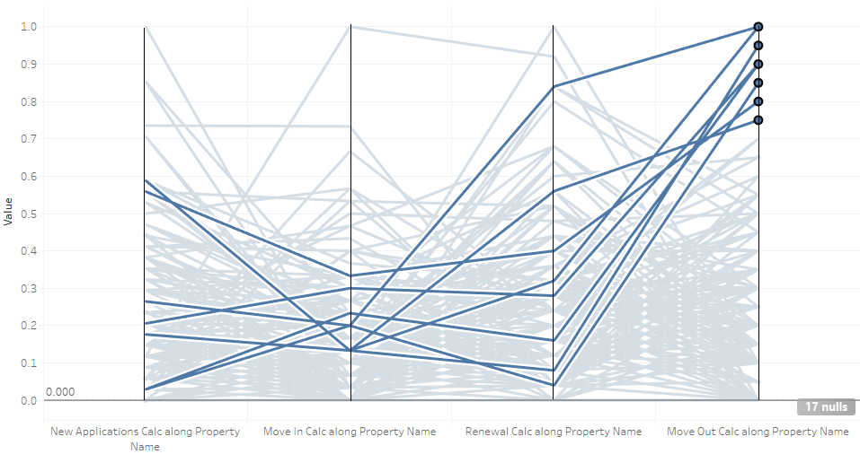
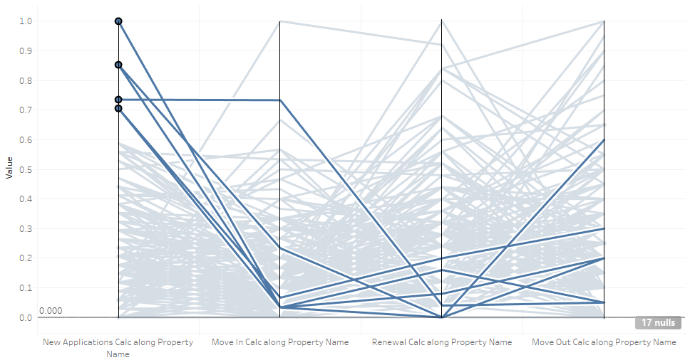
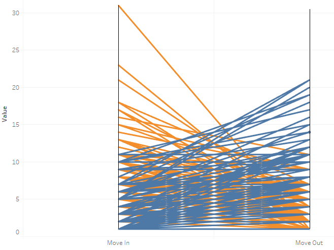
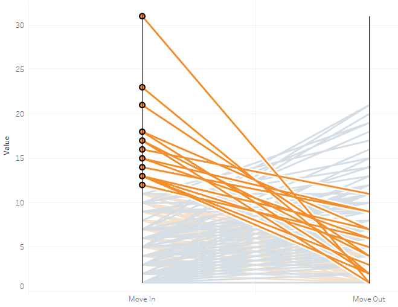
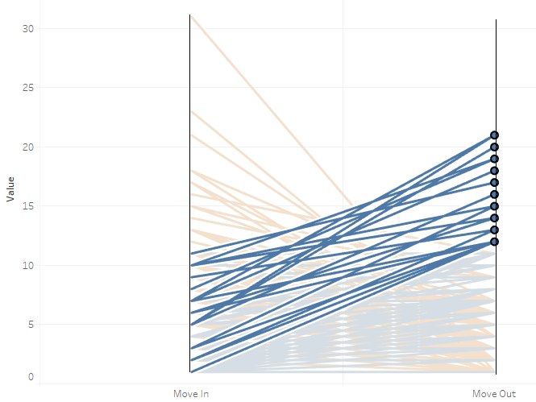

Parallel Coordinates for Resident Activity Data
Parallel coordinates are a powerful tool for visualizing multidimensional quantitative datasets and discovering trends within the data. The basic idea behind creating a parallel coordinate plot is mapping out each numerical attribute of a dataset on its own vertical axis and the values of each row are connected with lines through each attribute's vertical axis. We will use a this tool to plot the resident activity for the month of August using apartment data.
The dataset contains more than 100 properties along with the metrics related to resident activity, such as: new applications, move ins, move outs, renewals, transfers, and others. A subset of the data is shown below. Another advantage of using a parallel coordinate graph is that it will show the flow of the property's activity from start to finish. Very quickly we can see how many new applications convert to move ins or the number of residents moving in vs. moving out in the same month.
The disadvantage of using parallel coordinate is that having too much data can clutter the graph, making it less useful for analysis. For this reason, we will only plot 4 attributes from the dataset: new applications, move ins, renewals, and move outs. Another technique for having less clutter on the graph is to span the entire width of each attribute. This can be done in tableau by creating a calculated field and applying a min-max scaling formula to each attribute. This will rescale all the values of each attribute to a range between [0,1] allowing the minimum values to lie at the bottom and the maximum values at the top.
The graph is still very much cluttered and it's difficult to make sense of the data, especially in below the 50th percentile. To solve this issue, we will use a technique called brushing, which will highlight certain records in the graph.
Here the lines that are brushed represent the properties with the highest move outs in the upper 25th percentile. Looking at the axis for move ins we can see that all of these properties were below the 40th percentile. The distribution for renewals and new applications have a high variance therefore nothing significant can be concluded.

Here the brushed lines represent the properties with the highest renewals in the upper 40th percentile. Notice for new applications and move ins, most of these properties fall below the 40th percentile range. There seems to be a tradeoff between number of move ins and number of renewals; you can high numbers in one category, but not in both. Also, these most of these properties fell in the lower half range of move outs.
This graph highlights the properties with highest new applications in the upper 30th percentile. Although they had high application numbers, most failed to convert into new move ins, since they have some of the lowest move in numbers. This could be for a number of reasons, such as unqualified tenants, time to process new applications, apartment units are not ready, or other reasons. They also had low some of the lowest renewal numbers and most properties had more move outs than move ins.
Move Ins to Move Outs
Using a two axis parallel coordinate plot we can show very quickly which properties are over-performing and which are under-performing. Here the graph maps out the all the propertys' move ins to move outs. The orange lines are the properties with a net positive move ins, where move ins > move outs. The blue lines are the properties with a net negative move ins. Most of the lines are cluttered in the lower part but the over and under performers are visible on the top area of the graph.
The over-performers are the orange lines with the steepest slope, these have the the highest move ins and the lowest move outs. In contrast, under-performers are the blue lines with the steepest slope, these have the highest move outs and the lowest move ins.
 Conclusion
Parallel coordinates are a great visualization tool for multidimensional data that is moderateley-sized. One can very quickly discover trends within the attributes and with the brushing technique one can highlight any subset of the data that might seem interesting for further analysis, such as the properties with the highest new applications but had some of the lowest move in numbers.